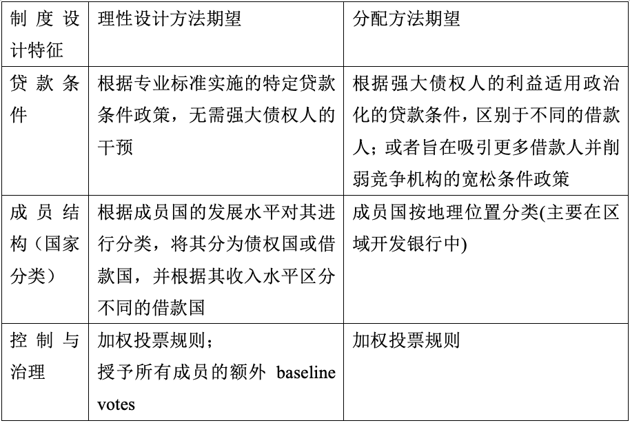
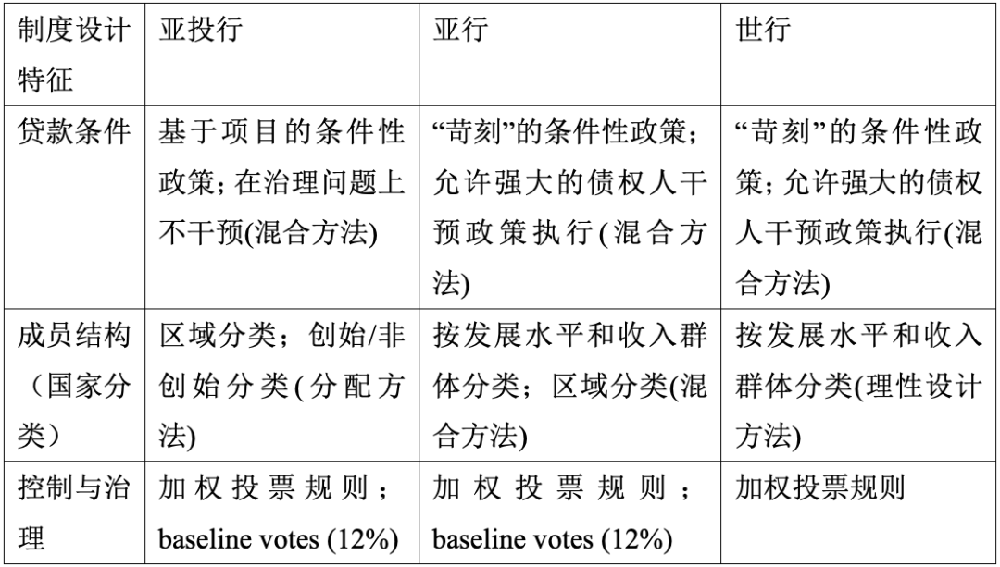
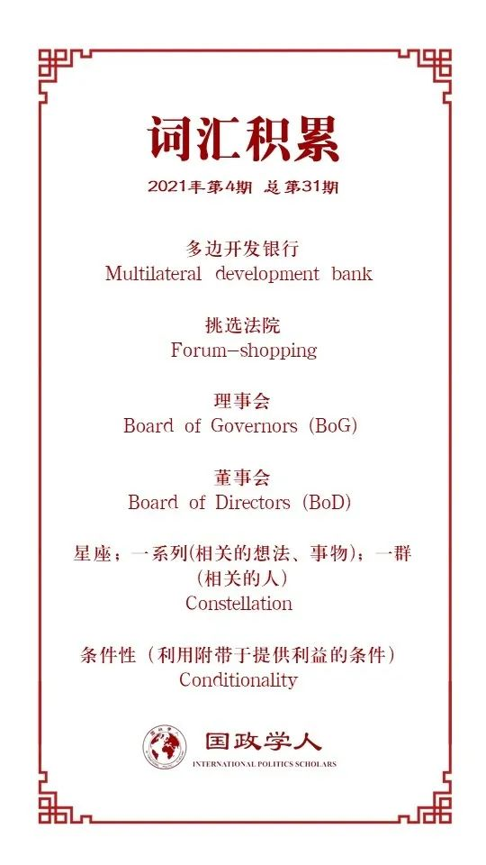

收录于合集

作品简介
【作者】 Doron Ella，耶路撒冷希伯来大学国际关系学系博士后研究员。研究方向为中国直接投资、国际机构、机构分类、中国的外交政策和机构设计。
【编译】 聂涵琳（国政学人编译员 中国人民大学国际政治经济学）
【校对】 李源
【审核】 任潇依
【排版】 张湘苹
【美编 】杜丛竹
【来源】 Doron Ella (2020) Balancing effectiveness with geo-economic interests in multilateral development banks: the design of the AIIB, ADB and the World Bank in a comparative perspective, The Pacific Review , DOI: 10.1080/09512748.2020.1788628
【归档】 《国际关系前沿》2021年第4期，总第31期。
期刊简介
The Pacific Review《太平洋评论》是太平洋地区研究的主要平台，作为跨学科期刊，其宗旨和目标为打破研究领域之间以及学术界、新闻界、政府和商界之间的壁垒，重点关注政策问题。根据Journal Citation Reports显示，2019年该刊的影响因子为1.633，在区域研究类SSCI期刊中排名11/77，在国际关系类SSCI期刊中排名第35/95。
**** 平衡多边开发银行的
效率 与地缘经济利益:
从比较角度看
亚投行、 亚洲开发银行
和世界银行的设计
Balancing effectiveness with geo-economic interests in multilateral development banks:
the design of the AIIB, ADB
and the World Bank
in a comparative perspective
Doron Ella（多论）
内容提要
本文通过比较和综合理论的方法，整合了三种制度设计方法，分析了三个制度特征，借此探讨亚投行的结构是否遵循、如何遵循其他主要多边开发银行的设计模式，以及将对制度效率的考虑与促进最大股东的地缘经济利益相结合的成功度，以推进关于亚投行设计动机的讨论。作者认为亚投行的设计者认识到了现有金融机构中某些功能缺陷，并试图建立一种更优替代方案。为实现这一目标，设计者尝试在促进机构绩效的结构特征与促进强大债权国地缘经济利益的特征之间取得平衡，并致力于提高亚投行相对于其他国际金融机构的吸引力。
文章导读
01
多边开发银行的目标与结构
多边开发银行的主要职能是以特定项目优惠贷款的形式促进和资助借款国的经济与社会发展，功能类似金融合作社或信用合作社。它们通常采用加权投票制度，最高级别权力授予理事会，但决策权一般从理事会下放到董事会，贷款和重大政策决策必须得到董事会的批准。
就贷款条件而言，世行规定将财政支持与实施改革方案联系起来，贷款条件可能会影响多边开发银行的政治可行性、吸引力以及成功实施各种投资项目的效率。
就成员结构而言，多边开发银行通常倾向于包容性，但在划分成员国方面可能有所不同。作者将分类定义为一种制度设计特征，最常见的分类方式是将成员国归类为发达或发展中国家，以此确定哪些国家以何种条件提供援助，或有资格获得援助，从而分为债权国或借款国。随着经济环境变化，某些标准也可能得到调整并使成员国存在类别间迁移。
02
多边开发银行设计的不同方法
在这一节中作者讨论了多边开发银行制度设计的三种方法：理性设计、分配方法和历史制度主义。它们不一定相互排斥，从每种方法得到的观点都可能与机构效率和权力考量有关。
1、理性设计
这种方法假设制度设计目的是解决各种国际机构固有的合作问题。多边开发银行可能会使借款国与债权国比较满意，因其拥有快速的贷款和项目审批流程、更加优惠的贷款，还能实施全面的发展影响评估和详细的尽职调查过程。建立国通常是多边开发银行最大的债权国，密切参与其设计，它们的设计考虑应当是研究的重点。
2、分配方法（现实主义）
分配理论假设行为者通常通过讨价还价试图实现最符合国家利益的结构性结果，当强国建立新的国际机构时，它们倾向于设计最有利于增进国家利益和相对于其他成员实力的机构。多边开发银行援助的分配需要平衡强大债权国利益和借款国需求，前者希望对活动与决策过程维持更大控制权，后者希望在某些事情上拥有平等发言权。作者认为多边开发银行通常融合了与这两种方法相对应的设计特性，强大债权国有时会成功利用某些结构特征来提高机构效率与增加本国具体利益。
3、历史制度主义
这种方法认为认为大多数制度并非来源于空白，1946年世行成立以来多边开发银行激增，为行为者提供了许多可选的设计。这些选择更容易在新机构框架内复制与实施，开启了在多边开发银行间进行“挑选法院”（forum- shopping）或“选择”的机会。在重叠的、效率和绩效上更有吸引力的银行间，各国可以转向新的、更有效的机构设计。但各国不一定会选择最有效的机构，而是选择将权力下放给最能反映其自身地缘政治偏好的机构。有时某些设计特征可能会同时提高效率和地缘经济利益，这使复制更具吸引力。
作者认为历史制度主义的论点始于已经制度化的现状的存在，判断一种新的制度安排是对现有制度的补充或竞争的一种方法是，考察新制度是否对现有制度在绩效和解决问题能力方面的重大缺陷做出反应(通过理性设计来补充缺陷)，或者建立国在淡化替代机构作用的同时是否努力争取对某个问题领域的更多控制，从而提高它们在这一过程中的声誉，构成一种“有争议的多边主义”或“制度平衡”。因此，在探索亚投行时还需要考虑其设计者的选择如何受到之前多边开发银行原有机构架构的影响或约束。
03
三个制度特征：贷款条件、国家分类与控制
1、贷款条件
遵循理性设计方法，相关条件可以作为投资项目成功实施的保证，从而推动受援国经济发展，降低负债机会。考虑到借款国的财政与经济能力对其援助的效率，以及与地方治理效率有关的方面，理性设计方法需要一项综合的、以专业标准为基础的条件性政策。
然而分配方法预计多边开发银行的贷款条件反映了强大债权国的政治、地缘经济或商业利益，债权国可以通过将贷款与接收国的市场改革挂钩来促进其商业利益，也可以要求政治改革，相比之下它们可能会允许盟友以更宽松的条件借款。但这会降低银行的可行度与合法性，增加某些潜在借款国不愿加入和寻求替代方案的可能性。另一方面设计师可以通过宽松的贷款条件或完全避免此类事件，以吸引更多潜在借款国，削弱其他多边开发银行吸引力，特别是在同一地区运营的区域开发银行(Regional development banks,缩写为RDBs)吸引力。
2、成员结构：国家分类
遵循理性设计方法，根据成员国发展水平划分不同收入群体，使多边开发银行能够改善成员异质性造成的合作问题。经济结构或能力不同的国家可能更难达到较发达国家的水平，对投资的预期结果也有不同看法。当这些国家没有合适分类时，它们有离开或支持创建新国际金融机构的动机。其次，形成不同收入群体的分类机制改善了不确定性带来的合作问题，允许收入群体内成员毕业和逆转的灵活机制降低了各国在面临经济冲击或意外变化时在银行内部地位的不确定性。分类机制还是多边开发银行尽职调查过程的组成部分。因此理性设计方法期望多边开发银行并入并使用这样的分类机制。
然而分配方法预计，建立国纳入分类机制可以产生对政治竞争对手的杠杆作用，或增加它们对银行的控制。有实力的成员国不一定会推动按发展水平分类，这不会增加它们作为大股东的影响力，但对低收入国家有更大影响，这些国家可以凭此接受赠款或软贷款。此外，作者认为这种分类将各国聚集在志同道合的类别中，它们可能和强大成员国有相同利益，从而产生投票集团。因此，分配方法期望只纳入直接增加强大成员控制与影响力的分类类型。
3、控制与治理
控制权与银行的投票规则和实际管理该机构的关键官员选举有关。理性设计方法辩称加权投票规则是银行的首选方案，大股东有大量财政支持，愿承担执行起决定的成本，往往发挥关键作用。其次，银行能够减轻与加权投票相关的对遵守的担忧，因为拥有最大投票影响力的国家拥有必要的杠杆，可通过补偿支付或威胁等机制诱使其他成员国遵守。此外银行可以给予成员国一套baseline votes，而不考虑它们的资本贡献，有助于提供给较弱国家更大影响力。
分配方法主张由银行中有权势的成员进行更多控制，强大国家可以利用它们对业务的相对控制，能够更容易推动或阻止某些决定的通过，通常不需要大量国家支持。总的来说，理性设计和分配方法是互补的：两者都希望多边开发银行采用加权投票规则。
表1：每种制度设计方法的预期总结

04
比较视角下的亚投行、亚行和世行
1、贷款条件
随着世行的发展，其条件性逐渐增加。如今世行利用条件性来确保其援助有助于该国的发展目标和资源用于预期目的，遵守其良好做法原则。这些条件主要体现在世行实施结构调整贷款上(structural adjustment loans)。然而涉及到某些借款国时，世行经常被批评执行条件方面效率低下，破坏了政策的可信度。
亚行的条件性政策跟随世行政策变化，大多数情况下亚行要求借款政府提供反担保或在其合同中附加条件，其条件经常导致在资金分配方面对某些潜在借款国的歧视，有时甚至将它们完全排除在外。世行和亚行的贷款条件政策的最初目的是提高援助效率和促进善政。然而美日作为最强大的债权国的地缘经济和政治利益驱使了对这些政策的修改，以及对某些借款国家的不均衡执行。
亚投行的条件性政策有所不同，在谈判贷款时它会考虑潜在的环境和社会影响，以及借款国的财政能力，学者和政策制定者普遍认为，亚投行成功采用了高度的社会和环境标准，以及提供了其遵守的原则的全面框架。一方面亚投行旨在通过接受似乎存在争议的高标准和可行标准，来回应借款国的需求，另一方面有利于其在全球资本市场的融资需求，并促进与其他多边开发银行的合作。在贷款条件政策中亚投行小心翼翼地避免解决善政问题，并表示不会干预成员国的内部事务，“只有经济考虑因素”才与决定相关。这种明确的不干预政策限制了该行在与借款国法律环境相关的事务上的影响力，有助于降低其他地区性或全球性替代方案的吸引力。该行条件性政策的设计反映了一种混合的做法，由不同的考虑驱动。 在谈判亚投行的设计时，设计师可能已经发现苛刻和政治化的贷款条件是现有国际金融机构设计中的一个潜在缺陷，所以决定以一种让人觉得亚投行更合作、更少干预的方式来设计，从而能够更好地争取潜在的借款国。
2、国家分类
亚投行采用两套分类机制，75%和25%的股份分别分配给域内成员和域外成员。截至2020年3月10日， 78个成员国中44个为域内，34个为域外，24个为意向成员国。董事会成员中9个来自域内成员，只有3个来自亚洲以外地区。这有助于保持亚投行的亚洲特色，确保了域内成员国在董事会和理事会的决策过程中始终拥有否决权。第二种分类机制是基于国家是否在亚投行成立期间的特定时间窗口内加入，从而有资格获得创始国家地位，获得额外的600票。这两种分类机制在成立期间吸引了更多国家以及一些世界主要经济大国加入。通过创始成员国分类，西方国家被授予“诱导代理” （induced agency），早期纳入西方经济大国对于亚投行获得金融信誉至关重要。它们的加入帮助提升亚投行的国际形象、声望和合法性；推动中国就亚投行的设计做出几项妥协，展示了中国机构建设的灵活性与成员国的包容性。
亚行分类机制类似，60%和40%的股份分别分配给域内成员和域外成员。8个董事会成员是区域成员，4个是非本地成员国，68个成员国中49个是本地区成员，19个是非本地成员国。该行采用的第二种分类机制是将成员国分为发展中国家(借款国)和发达国家(债权国)，依据两个主要标准：(i)人均国民总收入，(ii)信誉。理事会的绝对多数票决定哪些国家是发展中国家或发达国家。
作者认为放弃分类意味着在决定获得贷款的资格和方式方面，亚投行的历史机构及其地区成员——区域开发银行将有更大回旋余地。此外，亚投行只发放“硬贷款”，包括向中国本身发放贷款，因此放弃发达- 发展中的分类机制，只选择区域分类的决定，使区域成员对贷款决定及其条款具有更大的非正式影响力。另一个原因还可能与中国目前作为发展中国家在各种国际金融机构中的地位有关，在亚行和世行中国都被归类为中上收入发展中国家，然而这使其只能获得亚行的普通资本资源。 因此亚投行更倾向于建立一种增强区域成员国非正式影响力的分类机制，这一设计符合分配方式，但很大程度上忽视了理性设计方式中提出的关切，世行和亚行的分类设计更符合该方法的预期。
3、控制与治理
三家银行都采用加权投票制度，根据成员国的股份分配情况进行投票。中国在亚投行拥有超过25%的投票权，这意味着它不仅对任何需要绝对多数票的决定都拥有否决权，而且在亚投行的关键问题上拥有比日本和美国分别在亚行和世行更多否决权。控制的另一方面是选举行长和董事会并赋予他们权力。在亚投行和亚行内部，理事会选举董事会和行长，并可能修改协议。而在世行内部，五个最大股东中的每一个都可以为董事会任命一名执行董事，其他七名执行董事由其余会员国的理事投票选举产生。在亚行中日本控制着行长职位，还为日本官员保留了某些职位，反映亚行与日本财务省间强有力的跨政府联系。在世行，行长也被非正式地选定为美国人。
在控制权方面，三家银行都纳入了加权投票权，然而亚行和世行的目的是通过行长选举、跨政府联系以及董事会对理事会发出的指令的依赖，赋予有权势成员更多非正式控制权。亚投行旨在通过广泛编纂由绝对多数票决定的规则，赋予其最大股东即中国，更正式的控制权。 因此在控制方面作者认为建立国的动机是通过纳入加权投票规则来设计相对容易控制的多边开发银行。
表2：所考察的亚投行、亚开行、世行的机构特征摘要

05
结论与讨论
作者认为亚投行的设计表明其设计者发现了全球和地区性国际金融机构目前结构和运作方式中的某些缺陷。首先，通过实施独特的条件政策和区域分类机制，亚投行对区域内不满的借款国更具吸引力。然而这些决定并不是没有代价的。如果放弃实施具体有效的条件政策，以及根据成员国发展水平对成员国分类的机制，亚投行可能会失去作为健全的国际金融机构的部分可信度，在确保借款国成功实施投资方面的效率也会下降。此外作者认为在设计多边开发银行时，建立国更有可能倾向于纳入旨在提高其相对实力和促进地缘经济利益的设计特征，强势成员可能会将贷款条件等功能设计特征政治化，并将其目的从解决合作问题重新分配到推进地缘经济利益上，产生可信度缺陷。
在关于亚投行制度设计方面，作者认为制度路径依赖对创建新机构有缓解作用，即使亚投行不会对其他国际金融机构构成真正的挑战，它仍反映了中国成为亚洲领先大国的雄心。同时作者提出了若干值得探讨的问题，如不同的多边开发银行如何在借款国和贷款国之间有争议的利益之间取得平衡？最后作者指出随着新冠肺炎疫情的爆发，许多在各种多边开发银行担任债权国的发达国家都将经历长期的经济危机。在这方面亚投行已经建立了危机恢复机制，将提供100亿美元融资，减轻其成员国和客户因新冠疫情带来的经济、金融和公共卫生压力。
译者评述
自亚投行建立以来，国内外关于亚投行的研究日益增加，但大多数侧重分析亚投行的成立背景、法律应用、治理结构、投票决策以及中国在其中的作用等，对其制度设计特征的比较研究并不多。本文作者从亚投行的设计者认识到了现有金融机构中某些功能缺陷，并试图建立一种更优替代方案出发，通过三种制度设计方法，运用比较视角分析三个制度特征，探讨亚投行的制度设计结构是否遵循、如何遵循其他两个多边开发银行的设计模式和怎样做出对缺陷的弥补，并且紧紧围绕着对制度效率和促进强势债权国地缘经济利益这一主题。但本文内容对其他学者的观点与报告的引用较多，作者自身的观点与表态在文中体现得并不明显。
此外，本文虽然在制度设计方法中提到了历史制度主义方法，但并未在下文从比较视角分析三家银行中运用这种方法，而是侧重于从理性设计和分配方法出发分析。历史制度主义的优势在于能更清晰展现出制度变迁中各行为体间的政治互动与谈判策略，而从这个角度出发，我国学者朱杰进在2018年发表的论文可以提供一些十分有价值的补充。他从历史制度主义的分析范式出发，借鉴了关键节点的概念构建了一个新的“关键节点+反馈效应”的理论分析框架。运用到对亚投行的讨论和制度设计中，我国在 2013 年提出建立亚投行的制度倡议抓住了传统多边开发银行改革缓慢的关键节点，利用了我国在基础设施方面的强项；发达国家在加入后提供了认为亚投行缺乏多边性和不符合国际最佳标准的负面反馈，因此我国高度关注亚投行的国际合法性，在倡议的运营制度上作出了改变与让步，首要考虑亚投行的国际合法性而非制度安排控制力，基本融入现有多边开放银行制度体系，形成了与传统多边开发银行类似的股东国导向运营模式。在此从这一角度对本文作者的论证进行一些补充。
参考文献
[1]朱杰进.新型多边开发银行的运营制度选择——基于历史制度主义的分析[J].世界经济与政治,2018(08):30-61+157.
词汇整理

文章观点不代表本平台观点，本平台评译分享的文章均出于专业学习之用, 不以任何盈利为目的，内容主要呈现对原文的介绍，原文内容请通过各高校购买的数据库自行下载。
好好学习，天天“在看”
国政学人
支持学术公益与知识传播
微信扫一扫赞赏作者 __赞赏
已喜欢，对作者说句悄悄话
取消 __
发送给作者
发送
最多40字，当前共字
上一页 1/3 下一页
长按二维码向我转账
支持学术公益与知识传播
受苹果公司新规定影响，微信 iOS 版的赞赏功能被关闭，可通过二维码转账支持公众号。